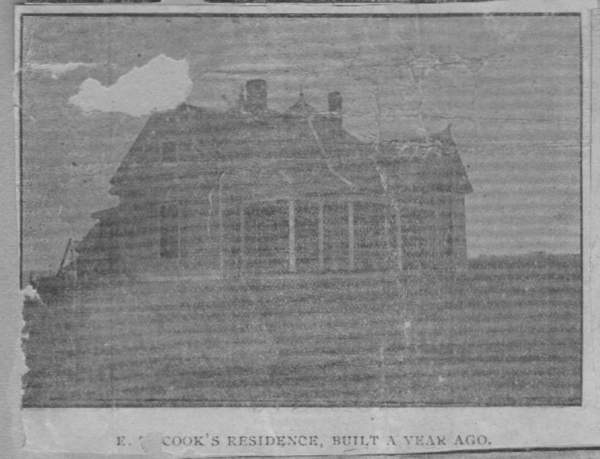
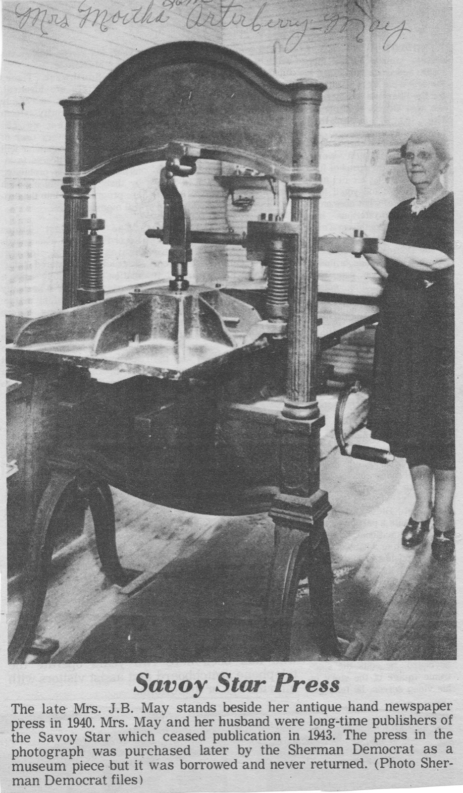

The Washington hand press was already old when Savoy was young.
Built around 1830 — forty years before Col. Savoy made his deal with the railroad, when Andrew Jackson was in the White House and North Texas was Comanche country — it was the kind of machine that printed newspapers for the frontier, that set in type the words that told people what was happening in their small corner of the world. By the time it arrived in Savoy, it had already outlasted its era. But it kept printing.

The Savoy Tribune was founded around 1890, just as the college was burning. By 1902, it had become the Savoy Star, operating under T.E. Arterberry and L.H. King. For forty-one years, that same press — the 1830 Washington hand press — ran off the issues that kept Savoy talking to itself. It printed announcements and school news and crop reports and letters from readers and the kinds of small-town chronicling that historians come to treasure a century later.
Martha Buford May ran the Star for decades. She was the sister of Miss Marsha Buford, who taught school in Savoy, and she was one of the town's de facto historians — not by trying to make history but by trying to keep up with it, which is how the best local journalism has always worked. The Star was not a great paper by metropolitan standards. It was a necessary paper, which is better.
The 1830 Washington hand press operated for 41 years at the Savoy Star before being purchased by the Sherman Democrat as a museum piece.
When the press finally stopped running for Savoy, the Sherman Democrat bought it as a museum piece. A machine that old, that durable, that continuous — it earned the display case.

By then the Arterberry family had been part of Savoy's commercial life for over forty years. H.H. Arterberry opened his dry goods store on Front Street and kept it open through cyclone and college fire and depression. His son Max took over. The store in the photograph — wide windows, a carefully lettered sign, the confident proportions of a building that expects to be there a while — lasted longer than almost anything else on that street. Forty years in business, in a town that had been through everything Savoy had been through, is an achievement that deserves its own paragraph.
These were the people who held the town together between the disasters — not the heroes of the dramatic moments, but the merchants and editors who showed up every day and made sure Savoy remained a place worth living in.
All Tales